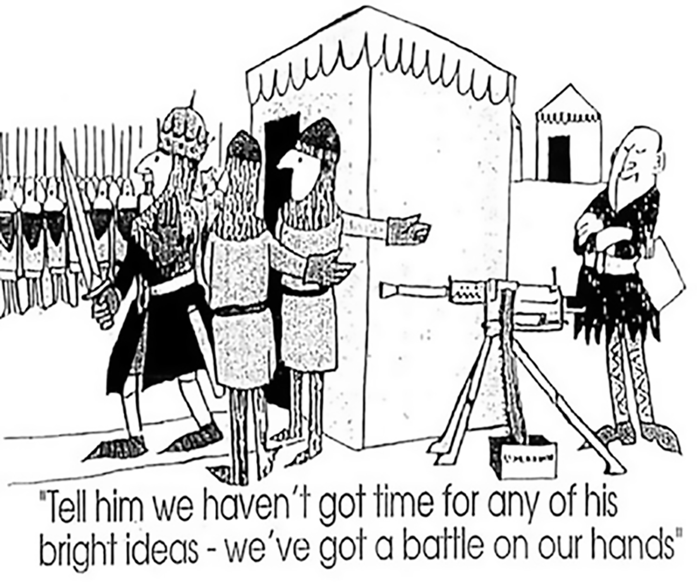

Thoughtware
before software.
Why account-based marketing is won at the point of inspiration, and what the teams who win it do first.
Insights, hindsights and foresights
Kate Burda & Co. | kateburda.com
01 The name
We wish we could change the name.
Account-based marketing has "marketing" in the title. So everyone assumed it belonged to marketing, and marketing ran with it. Target lists. Intent data. Campaigns. Platforms. Somewhere in the programming, the customer got lost.
It was never meant to be a marketing project. At its best, ABM is a customer-led, account-owned growth strategy. The account lead is the tip of the spear. Marketing is the amplifier. The whole team wraps around where the customer is in their own journey. For most organizations, though, ABM has come to mean more technology aimed at fewer logos. That's where it goes wrong.
02 Where ABM derails
- 1It becomes higher-order campaign management. One to many, one to few, one to one. The targeting gets sharper. The message is still about what we want to say.
- 2It stays product-led. The launch calendar drives the content. The account lead inherits collateral and is asked to send it to customers they know deeply. The relationship absorbs the damage.
- 3It funds deployment over approach. Which platform, which channels, how many touches. The how gets the budget. The why and the when get none.
- 4It has a blind spot at the point of inspiration, the one moment where it matters most.
You can run a flawless one-to-one program and still be irrelevant to the customer.
03 The point of inspiration
The moment before the customer can name what they need. And no one is there.
Something shifts. A rule changes. A competitor moves. A key account wobbles. The board asks a question nobody can answer. The customer knows they have to do something different, but not what yet.
Most suppliers show up later, when the customer is aware of products and comparing them. By then the problem is framed, the criteria are set and the customer has decided who understands them. Most teams arrive with a product answer to an emotional question.
17%
of B2B buyers' total buying time is spent meeting with potential suppliers, split across every supplier they're considering. Most of the thinking happens without you.
Gartner, 2020
04 Feeling decides
When thinking is equal, feeling decides.
B2B isn't less emotional than B2C. It's more. The person across the table is staking their credibility, their team and sometimes their career. Most teams map what customers think. The decision is being made in the part they aren't mapping.
Empathy isn't flat. One person carries three pressures at once. Take a head of cardiology at a hospital:
Personal
What they feel privately. Fear, frustration, self-doubt.
The helplessness of losing visibility the moment a patient leaves the building.
Professional
What's at stake for their career and reputation.
Exposure every time a readmission lands, measured on outcomes outside their control.
Organizational
What the institution absorbs. Cost, reputation, position.
A program that can't show it's reducing avoidable readmissions, and the cost of each one.
A product brochure speaks to none of that. A team that understands all three is relevant long before a product is on the table.
05 The thoughtware
Understand before you solve.
Customer-led ABM runs on a sequence. It's simple to describe and hard to shortcut. The order is the point.
A message that sounds right isn't right until it traces back through the customer's journey. Teams that start at step seven write clever lines that land nowhere.
- 1The journey stagePoint of inspiration, informed, explore, aware, validate. Where is this customer, and what changed?
- 2Thinking and feelingTheir questions in their own words, and the emotion underneath, across all three pressures.
- 3FocusWhat they care about at this stage, and the window they're working against.
- 4What we haveEverything in the closet: capabilities, insight, partners, proof. Not just products.
- 5The sweet spotWhere what we have meets what they care about, right now.
- 6Value propositionBecause they're focused on this, we bring that, which creates this impact.
- 7The differentiated messageOnly now. And only if it foots back through every step above.
- 8Channel and championWho on the team delivers it, and where.
06 Software is the last lap
Software is the last lap, not the first.
More platforms claim to do ABM today than at any point in history. Most use software to solve problems their users don't understand yet. The problem isn't the technology. It's technology without the thinking underneath it.
| Thoughtware | Who the persona is. What they're feeling at the point of inspiration. The pressures they carry. | Can't be bought |
| Methodology | The customer journey, the point of inspiration, the cost of inaction, the value story. | Partly |
| Engagement planning | How you show up at each stage. What you say, and when. | Partly |
| Deployment | Account planning infrastructure, channels, automation, reach and scale. | This is where technology lives |

A fool with a tool is still a fool.
The platforms sell deployment infrastructure. Useful, but only once the foundation is built. The organizations that win won't have the best technology. They'll have built the thinking the technology runs on.
Thoughtware, then methodology, then deployment. In that order.
07 Customer-led, team-enabled
One account. One plan.
When marketing and sales each work in their own corner, it isn't account-based anything. It's awareness marketing with a target list, and the customer feels it. In a customer-led, team-enabled model, the account plan and the ABM plan are the same document. It starts with the customer's journey and defines what each discipline brings.
Marketing brings
- The persona and the emotional insight
- Market intelligence and trends
- The value proposition and messaging
- Proof points and the channel plan
The account lead brings
- The relationship and stakeholder map
- The opportunity portfolio
- Solution fit and co-creation
- Execution and follow-through
08 In practice
A global medical technology company
Hospital account teams across Argentina, Colombia and Puerto Rico, Mexico, Chile and Brazil wanted to move from product-led selling to customer-led engagement with their most important accounts. We took them from a webinar to a multi-day, in-person workshop. Each team took one real account and built its journey on a poster, stage by stage: the persona and their three pressures, the point of inspiration, what was in the closet, the sweet spot, the value proposition and a message for every stage, with a named owner for every touch.
Sales and marketing built it together, in the same room, as one account plan.
09 Why it pays
Own the mindshare early. Own the market share later.
Owning the point of inspiration isn't a softer way to sell. It's a harder-edged way to grow. The research on firms that do ABM well bears it out.
21–50%
Deal-size uplift on ABM accounts reported by nearly a third of firms. About a third more saw 11% to 20%.
Forrester, 2024
72%
of ABM leaders say ABM delivers a higher ROI than any other type of marketing.
Momentum ITSMA and the ABM Leadership Alliance
17%
of ABM programs are fully embedded in how the company goes to market. For most, it still sits beside the account plan, not inside it.
Momentum ITSMA and the ABM Leadership Alliance
The same study found 84% of ABM programs improving pipeline growth and 77% seeing revenue growth. That last 17% is the opportunity. The gap between firms that run ABM and firms that win with it is the thoughtware.
Mindshare→Market share→Share of wallet→Lifetime value
- 1Mindshare becomes market share. The supplier who helped the customer understand the shift is the one they call when they're ready to act.
- 2Market share becomes share of wallet. A customer who feels understood brings you the next problem before it goes to tender.
- 3Share of wallet becomes lifetime value. Relevance compounds. Every stage you show up well in makes the next one easier.
10 Foresight
Ten questions to ask about your most important account.
- 1What shifted in this customer's world in the last six months that they haven't named out loud yet?
- 2Who was in the conversation when that shift started? Were you?
- 3Can you name your key persona's personal, professional and organizational pressures?
- 4Does your account plan mention what the customer is feeling, or only what they're buying?
- 5Are your account plan and your marketing plan the same document?
- 6Does everything you send this account trace back to where they are in their journey?
- 7Do you know what's in your organization's closet beyond your product?
- 8Who on your team owns each stage of this customer's journey?
- 9If you removed your ABM platform tomorrow, would your strategy still stand?
- 10Are you measuring clicks and impressions, or share of wallet and lifetime value?
Mostly yes: you're running customer-led ABM. Keep going.
Mostly no: you're running campaigns with a target list. You're not alone, and it's fixable.
You don't have to go it alone.
A small action can create a point of inflection and brilliance. 20 minutes, no pitch: kateburda.com
Sources: Forrester, "Account-Based Marketing Results In Larger Average Deal Sizes Across Regions," Daryl Wright, December 9, 2024. Momentum ITSMA and the ABM Leadership Alliance, sixth annual ABM Benchmark Study, 279 ABM leaders and practitioners, December 2022. Gartner, "5 Ways the Future of B2B Buying Will Rewrite the Rules of Effective Selling," Brent Adamson and Nick Toman, August 2020.